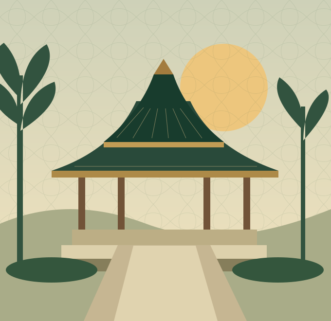

Hormati ruang dan tradisi
Kenakan pakaian pantas, ikuti arahan pengelola, dan jaga ketenangan di area sakral.
Temukan cerita di balik warisan budaya Solo.
Rawat tradisinya, hormati masyarakatnya,
dan jaga privasi dalam setiap perjalanan.

JIWA JAWA, CERITA SOLOIlustrasi arsitektur pendopoDari halaman keraton hingga lorong kampung batik,
setiap tempat menyimpan cerita untuk dijaga.
Tidak ada destinasi yang cocok. Coba kata kunci lain.
Ilustrasi konseptual, bukan foto lokasi. Konfirmasi jadwal, tiket, dan akses kepada pengelola.
Budaya hidup bersama masyarakatnya.
Hal kecil yang kita lakukan ikut menjaganya.
Kenakan pakaian pantas, ikuti arahan pengelola, dan jaga ketenangan di area sakral.
Hormati area tanpa kamera. Minta izin sebelum memotret atau membagikan foto orang lain.
Jaga kebersihan, jangan menyentuh koleksi tanpa izin, dan dukung karya perajin lokal.
Menghormati kesakralan dan keyakinan masyarakat.
Menjaga martabat, identitas, dan privasi setiap orang.
Mengenal keberagaman sebagai kekayaan bersama.
Mendengarkan aspirasi dan menerima koreksi.
Membuka akses informasi dan mendukung masyarakat lokal.
Jelajahi informasi tanpa membuat akun. Prototipe ini tidak meminta nama, NIM, nomor telepon, atau email.
Acuan pembelajaran: UU No. 27 Tahun 2022 tentang Pelindungan Data Pribadi. Prototipe ini bukan sertifikasi kepatuhan hukum.
Secara default, data formulir hanya ada selama halaman terbuka. Penyimpanan opsional hanya menggunakan browser ini.
Tidak ada analitik atau iklan. Hosting dapat memproses log teknis. Data demo tidak dikirim ke pengelola destinasi.
Tanpa nama yang ditampilkan. Jangan tulis identitas pribadi atau data orang lain.
Sampaikan kesalahan informasi, penggunaan foto tanpa izin, atau persoalan privasi.